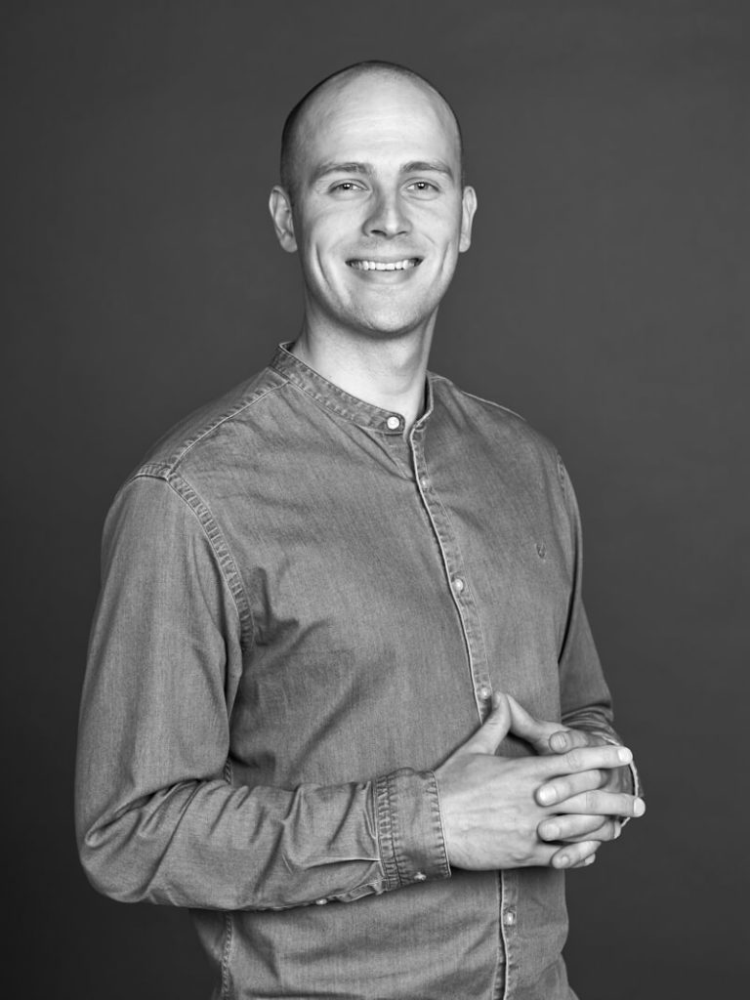

Hver er égReykjavík DigitalAf hverju nýtt nafnREYTALTeymiðVerkefnin
Glósur · 1 mínHeilsa, segja hver ég er í einni setningu og hvað er framundan í hálftímanum. Gulmerkti textinn í þessari kynningu er það sem á eftir að fylla inn.
Hver er ég
Stutta útgáfan
Fæddur1985 í Vestmannaeyjum
UppalinnÍ Eyjum [og hvert svo?]
MenntunBA í markaðsfræði, Barcelona
FjölskyldaSara Henný, þrjú börn — og afi
Áhugamál[Tvö til þrjú sem segja eitthvað]
Býr íGrafarvogi
Glósur · 3 mínÖrstutt, eins og Anna sagði. Eitt skemmtilegt smáatriði er betra en heil ferilskrá. Enda á því hvernig ég lenti í vefbransanum.
Hvað geri ég
Ég rek vefstofu og kem við sögu í hverju verkefni
[Hvað gerir þú í raun og veru á venjulegum degi]
Tala við viðskiptavini, met hvað á að byggja og hvað ekki.
Set saman teymi á hvert verkefni og held utan um tímalínur.
[Hversu mikið kemur þú sjálfur að forritun eða hönnun]
[XX]
Ár í bransanum
[XX]
Vefir í loftinu
8
Í teyminu í dag
2
Borgir: Reykjavík og Tallinn
Glósur · 2 mínTölurnar eru til að gefa stærðargráðu. Ef ein þeirra er á reiki skaltu frekar sleppa henni en að giska.
Þar sem þetta byrjaði
Reykjavík Digital
Stofnað[Ár]
Byrjaði sem[Einn maður, hliðarverkefni, annað]
Fyrsti vefurinn[Hver var hann]
SérhæfingVefþróun, netverslanir og leitarvélabestun
Við byggðum vefi fyrir íslensk fyrirtæki og stofnanir: allt frá kynningarvefjum upp í sérsmíðuð kerfi. Mikið af því sem við gerum í dag varð til þar.
[Eitt sem þú ert stoltastur af frá RVK Digital tímanum]
Glósur · 3 mínHér er samhengið fyrir nafnabreytinguna. Ekki fara of djúpt, verkefnin koma á næstu glæru.
Verkefni frá Reykjavík Digital
Nokkur sem stóðu upp úr
kirkjan.is
Skjáskot · Þjóðkirkjan Veftré, wireframe og forritun
verkis.is
Skjáskot · Verkís Vefþróun og SEO
sigurros.com
Skjáskot · Sigur Rós Forritun og uppsetning
takkkronur.is
Skjáskot · Takk (Hagar) Vildarkerfi Bónus og Hagkaups
sjukast.is
Skjáskot · Sjúkást (Stígamót) Tilnefnt til PHNX 2024
[þitt val]
Skjáskot · [Verkefni að eigin vali]
Glósur · 4 mínTaktu skjáskot og settu í reitina í staðinn fyrir röndóttu fletina: <img src="skot-kirkjan.jpg" alt=""> inni í .shot. Segðu eina sögu á hvert verkefni, ekki lista upp allt sem var gert.
Af hverju að skipta um nafn
Nafnið var farið að vinna gegn okkur
[Vandræðin með nafnið: of langt, erfitt í síma, ruglingur við aðra]
[Alþjóðlega hliðin: Tallinn, viðskiptavinir utan Íslands]
[Lénið og samfélagsmiðlar: hvað var upptekið]
[Það sem við vorum orðin, ekki bara vefstofa í Reykjavík]
Ákvörðunin var tekin [hvenær] og ferlið tók [hversu langan tíma].
Glósur · 3 mínAnna bað sérstaklega um þennan kafla. Mátt alveg hafa eitt dæmi sem er pínu vandræðalegt, það er það sem fólk man.
Lendingin
Reykjavík Digital↗︎REYTAL
Nafnið er dregið af [hvaðan kemur REYTAL: REY úr Reykjavík, TAL úr …]. Stutt, auðvelt í síma og virkar jafn vel á ensku.
Nafnið[Hver fann það, hvernig]
Merkið[Hver hannaði það]
HugmyndinREY stendur upprétt, TAL snýr við: sami stafurinn, tvær áttir
Vefurinnreytal.is, í loftinu [hvenær]
Glósur · 4 mínHér er gott að sýna merkið stórt og benda á flippið. Það mótíf gengur í gegnum allan vefinn: fyrirsagnir réttast við þegar skrollað er.
Nýi vefurinn
reytal.is
Nýr vefur fylgdi nafninu: hann er í loftinu og við höldum áfram að þróa hann. Allt handskrifað, ekkert þema.
reytal.is
Skjáskot · forsíðan [eða opna vefinn í vafra í staðinn]
reytal.is/vefuttekt
Skjáskot · vefúttektin
Glósur · 2 mínEf netið í salnum er traust er langbest að opna vefinn sjálfan og skrolla í gegnum verkefnakaflann í staðinn fyrir skjáskot.
Það sem við erum að brasa
Greiningarvél sem les íslenska vefi
Á reytal.is/vefuttekt slærðu inn lén og færð úttekt á tækni, hraða, öryggi og sýnileika á innan við mínútu. Ekkert kreditkort, engin skráning.
30.000+
Íslenskir vefir greindir
< 1 mín
Frá léni í úttekt
Við notum hana sjálf til að undirbúa samtöl við ný fyrirtæki.
[Hvað kemur mest á óvart í gögnunum]
[Hvað er framundan með hana]
Glósur · 3 mínÞetta er sá hluti sem fólk man eftir: við byggðum tól sem skannar íslenska vefinn. Bjóddu salnum að prófa á sínum eigin vef eftir á.
Teymið
Hverjir vinna með mér
Jón HaukurVerkefnastjóri

TómasVerkefnastjóri
ÍsakHönnuður
PéturHönnuður
MikkForritari
DaníelForritari
EinarForritari
[Fleiri?]
Fastir starfsmenn og verktakar: [hvernig skiptist það]. Teymið er í [Reykjavík og Tallinn, hvernig skiptist það].
Glósur · 3 mínNefndu helstu, ekki alla í röð. Ef Mikk er í salnum, gefðu honum orðið stutta stund á næstu glæru.
Ef hann er í salnum
Mikk
Hvaðan[Hvaðan kemur hann]
Saman síðan[Hvað hafið þið unnið lengi saman]
Gerir[Hvað hann gerir hjá okkur]
Verkefni[Eitt sem hann leiddi]
[Gefa honum orðið í eina til tvær mínútur, eða segja þetta sjálfur]
Glósur · 2 mínAnna stakk upp á þessu: gefa honum tækifæri á að segja frá sér, en stutt. Ef hann er ekki á staðnum, slepptu glærunni (ýttu á 12).
Valin verkefni
Það sem við höfum verið að gera
Orkureiturinn · Söluvefur ársins 2025VerkísLíttupp · NetöryggismiðstöðMarch Forward · UN Women
Glósur · 4 mínOrkureiturinn fyrst: söluvefur ársins 2025 hjá SVEF, unninn með Pipar\TBWA. March Forward er líka þeirra verkefni, svo salurinn þekkir það. Myndböndin spilast sjálf þegar glæran birtist.
Takk fyrir
Spurningareru velkomnar
Prófaðu vefúttektina
reytal.is/vefuttekt · sláðu inn þitt eigið lén og sjáðu hvað kemur.
Samband
hallo@reytal.is · reytal.is · Guðrúnartún 8, 105 Reykjavík
Glósur · 2 mínEnda á boði: prófið vefúttektina á ykkar eigin vef, ég fer yfir niðurstöðurnar með hverjum sem vill.